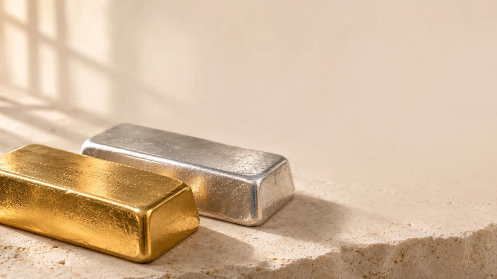

شمارهٔ صبح
۱۱:۰۰به وقت تهرانفلزات بالاتر؛ بازار در انتظار دادههای آمریکا
افت دلار و بازده اوراق از طلا حمایت کرد. مرور ایران، نرخهای ثبتشدهٔ طلا، نقره و ارز را در کنار آخرین جلسهٔ بورس قرار میدهد.
بازار جهانی
دلار / اونس تروا
دلار / اونس تروا
طلا در ابتدای روز
گزارش صبح ۵ نوامبر رویترز، طلای نقدی را در ساعت ۰۳:۱۶ گرینویچ، معادل ۰۶:۴۶ تهران، ۴٬۱۳۴٫۸۳ دلار برای هر اونس ثبت کرد. رشد ۱٫۹ درصدی، قیمت را به بالاترین محدودهٔ دو هفته رساند. دلار ضعیفتر و کاهش بازده اوراق خزانه، دو عامل همراه این حرکت بودند.
در همان گزارش، نقرهٔ نقدی با رشد ۱٫۷ درصدی به ۵۳٫۱۲ دلار برای هر اونس رسید. گزارش همچنین از رشد سهام جهانی در واکنش اولیه به نتیجهٔ انتخابات میاندورهای آمریکا خبر میداد.
تقویم پیش رو
بر اساس تقویم ادارهٔ آمار کار آمریکا، گزارش اشتغال اکتبر برای جمعه ۶ نوامبر ساعت ۰۸:۳۰ شرق آمریکا، معادل ۱۷:۰۰ تهران، برنامهریزی شده بود. این داده از آن جهت در کانون توجه قرار داشت که میتوانست بر ارزیابی بازار از مسیر نرخ بهره اثر بگذارد. جهت واکنش قیمت، پیش از انتشار داده قطعی نبود.
نظر منابع معتبر جهانی
لین تران، تحلیلگر بازار در شرکت ایکساس، حفظ طلا بالای ۴٬۰۰۰ دلار را کلیدی دانست و گفت ادامه ورود سرمایه و افت بازده میتواند مسیر ۴٬۲۰۰ و سپس ۴٬۴۰۰ دلار را باز کند. سیتی در همان گزارش، هدف صفر تا سهماهه ۴٬۵۰۰ دلار را حفظ کرد؛ این هدف سناریو است، نه اجماع یا تضمین.
برداشت تیم تحلیل موریاتی
نسبت همزمان طلا به نقره ۷۷٫۸۴ است. برای پنج جلسه جهانی آینده، جهت طلا را «رشد نوسانی» با اطمینان متوسط میبینیم: ماندگاری بالای ۴٬۰۰۰ دلار، دلار نرمتر و افت بازده حمایت میکنند؛ احتمال بالای افزایش نرخ و گزارش اشتغال قوی شواهد مخالفاند. بازگشت بازده یا تثبیت زیر ۴٬۰۰۰ برداشت را خنثی میکند.
برای نقره، جهت «رشد نوسانی» با اطمینان پایین است. همراهی با طلا روشن است، اما داده صنعتی تازهای که رشد مستقل را تأیید کند نداریم. دوام بالای ۵۲ دلار همراه با بهبود شاخصهای صنعتی شرط تقویت؛ دلار قویتر یا افت فعالیت شرط تضعیف است. تمایل تحلیلی ما صبر برای تأیید پس از اشتغال است، نه سیگنال معامله.
بازار ایران
طلا، نقره، بورس و ارز
| بازار | نرخ و مبنا | زمان ثبت |
|---|---|---|
| دلار آزاد تهران | ۲۶۷٬۷۰۰تومان / فروش | ۱۱:۰۱ [۳] |
| حوالهٔ رسمی دلار | ۱۸۸٬۶۶۸تومان / فروش | آخرین ثبت: ۱۳ آبان [۸] |
| طلای ۱۸ عیار | ۲۶٬۰۹۷٬۶۹۶تومان / گرم | ۱۱:۰۱ [۳] |
| نقرهٔ ۹۹۹ | ۴۷۸٬۴۲۰تومان / گرم | ۱۰:۵۰ [۴] |
| آبشدهٔ نقدی | ۱۱۳٬۰۵۰٬۰۰۰تومان / مثقال | ۱۱:۰۱ [۳] |
| بورس تهران | جلسهٔ تازه نداشتآخرین جلسه: ۱۳ آبان | روز غیرمعاملاتی [۶] |
طلا، نقره و ارز؛ تصویر ثبتشدهٔ صبح
در نسخهٔ اصلی این شماره، نرخ فروش دلار آزاد بنبست در ساعت ۱۱:۰۱، ۲۶۷٬۷۰۰ تومان و طلای ۱۸ عیار ۲۶٬۰۹۷٬۶۹۶ تومان برای هر گرم ثبت شده بود. نرخ نقرهٔ ۹۹۹ نیز در برداشت ساعت ۱۰:۵۰ از شبکهٔ طلا و ارز، ۴۷۸٬۴۲۰ تومان برای هر گرم بود. این ارقام، مشاهدات آرشیوی همان شمارهاند؛ ساعت و منبع آنها یکسان نیست.
سهام؛ مرور آخرین جلسه
پنجشنبه، بازار سهام تهران جلسهٔ معاملاتی تازهای نداشت. مبنای مرور، چهارشنبه ۱۳ آبان است؛ تسنیم رشد حدود ۱٫۱ درصدی شاخص کل را برای آن روز گزارش کرد. بنابراین عملکرد بورس در این شماره، به جلسهٔ پیشین تعلق دارد و نباید با نرخهای پنجشنبهٔ ارز و فلزات همزمان فرض شود.
تأمین مالی ارزی؛ خبری برای بازار سرمایه
بانک مرکزی در اطلاعیهٔ ۱۲ آبان، ابلاغ دستورالعمل اوراق وکالت ارزی را اعلام کرد. این چارچوب، استفاده از منابع ارزی برای تأمین مالی طرحهای مشخص را در نظر میگیرد و برای هر پروژه سقف پایه تعیین میکند. در خبرنامه، این خبر در بخش تأمین مالی دنبال میشود و از تغییر روزانهٔ شاخص سهام جداست.
برداشت موریاتی
در بازار داخلی، اثر اونس از مسیر تبدیل ارز به قیمت ریالی میرسد. بنابراین افزایش قیمت جهانی میتواند با کاهش نرخ ارز بخشی از اثر خود را از دست بدهد. برای مقایسهٔ شمش، آبشده و مصنوعات نیز وزن، عیار، هزینهٔ ساخت، سمت خرید یا فروش و شرایط تسویه باید روشن باشد. فاصلهٔ دو تابلوی ناهمزمان، بهتنهایی نشانهٔ فرصت قطعی خرید یا فروش نیست.
منابع این شماره
- Reuters — Gold hits a two-week high (morning report)
- U.S. Bureau of Labor Statistics — November 2026 release calendar
- Bonbast — Iranian free-market quotations
- TGJU — Silver 999
- Central Bank of Iran — foreign-currency wakala securities
- Tasnim — Tehran equity-market report, 13 Aban 1405
- Ideal Kousha brokerage — market trading calendar
- Tasnim — official USD remittance, 13 Aban 1405
گزارش آرشیوی موریاتی؛ بدون توصیه یا اجرای معامله.